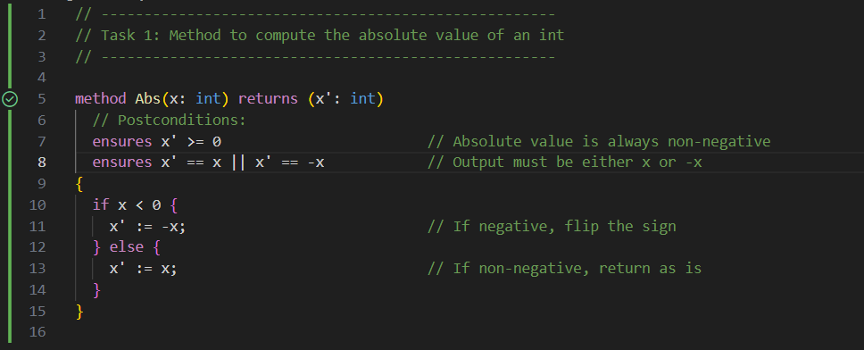
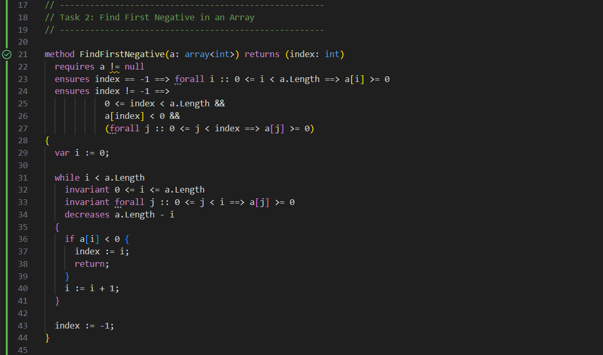
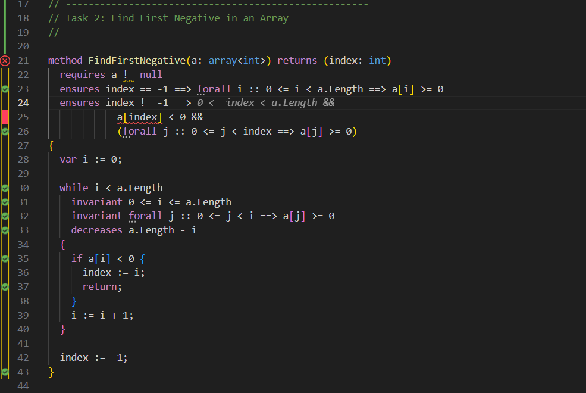
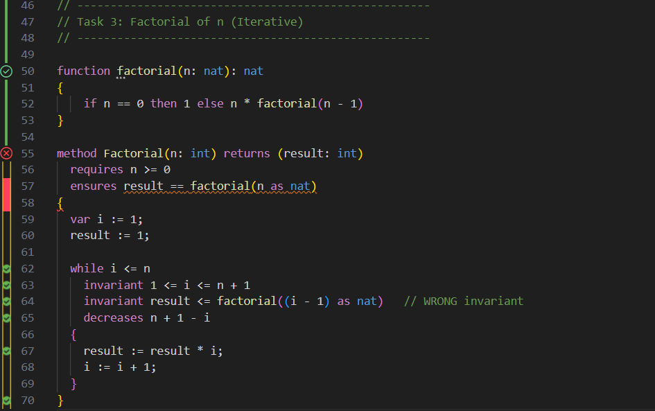
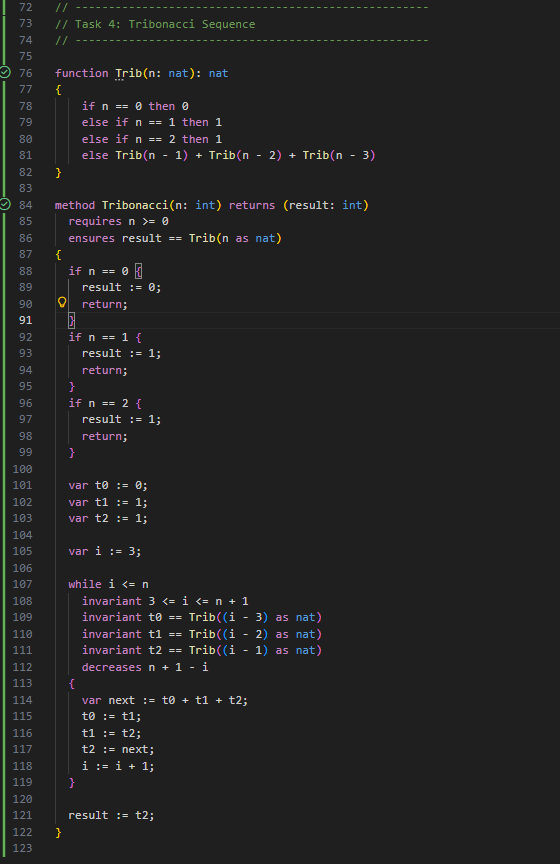
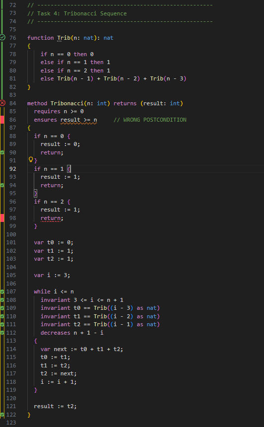
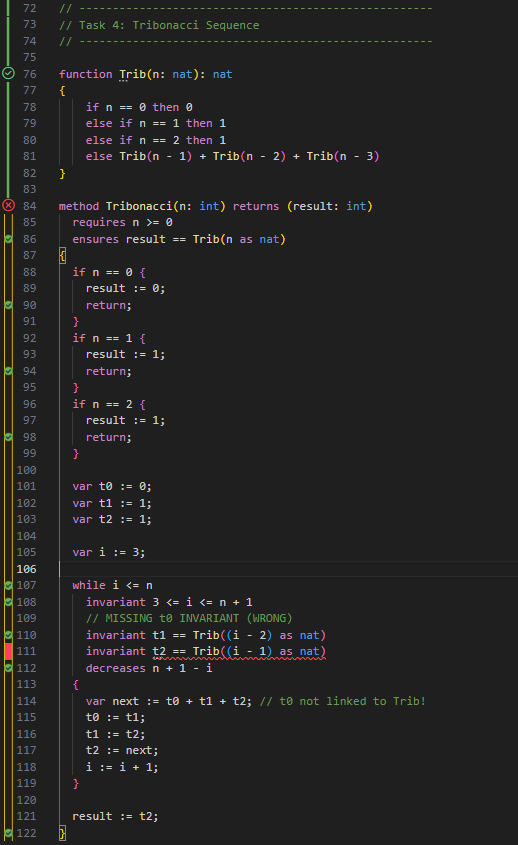
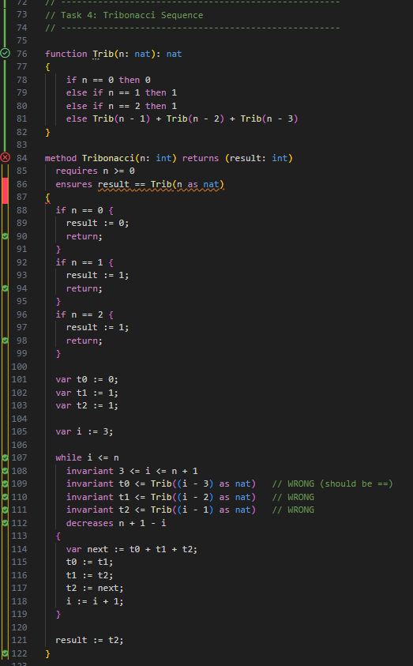
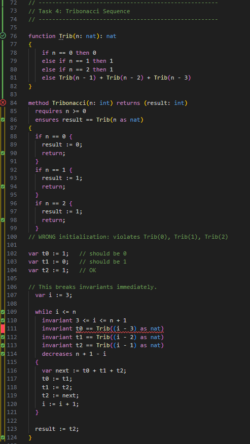

The goal of this task was to implement a Dafny method that computes the absolute value of an integer. Dafny was used to verify logical correctness using postconditions that describe the function's expected behavior.
x' >= 0 - result is always non-negative.x' == x || x' == -x - captures the
mathematical definition of absolute value.The method verified successfully, as shown below:
Figure: Successful verification (green checkmark).
An earlier attempt incorrectly specified the second postcondition, allowing only
x' == x. Dafny correctly rejected this since negative inputs produce -x.
// Incorrect version explored during verification
method Abs(x: int) returns (x': int)
ensures x' >= 0
ensures x' == x // Incorrect: does not allow x' == -x
{
if x < 0 {
x' := -x;
} else {
x' := x;
}
}
Dafny rejected this version because the method returns -x for negative values,
which does not satisfy the incorrect postcondition.
Figure: Verification failure due to incorrect postcondition.
This task demonstrated the importance of writing complete and accurate postconditions. Even a small omission results in verification failure, reinforcing how Dafny enforces logical correctness.
This task required implementing a Dafny method that scans an array and returns the index of the first negative value. Verification required correct postconditions, loop invariants, and loop variants to ensure both correctness and termination.
a != null - array must exist.forall i :: 0 ≤ i < a.Length ⇒ a[i] ≥ 00 ≤ index < a.Lengtha[index] < 0forall j :: 0 ≤ j < index ⇒ a[j] ≥ 00 ≤ i ≤ a.Length - loop index stays in bounds.forall j :: 0 ≤ j < i ⇒ a[j] ≥ 0 - all checked elements so far are non-negative.a.Length - i - decreases each iteration, proving termination.The method verified successfully with the complete specification:
Figure: Successful verification (green checkmark).
In an earlier attempt, the postcondition referenced a[index] without ensuring that
index was within bounds. Dafny correctly rejected this, since safe array access
must be explicitly guaranteed.
// Incorrect version encountered during verification method FindFirstNegative(a: array) returns (index: int) requires a != null ensures index == -1 ==> forall i :: 0 <= i < a.Length ==> a[i] >= 0 ensures index != -1 ==> a[index] < 0 && // Missing explicit bound (forall j :: 0 <= j < index ==> a[j] >= 0) { var i := 0; while i < a.Length invariant 0 <= i <= a.Length invariant forall j :: 0 <= j < i ==> a[j] >= 0 decreases a.Length - i { if a[i] < 0 { index := i; return; } i := i + 1; } index := -1; }
Figure: Verification failure due to potential out-of-bounds access.
This task highlighted the importance of explicitly specifying array index bounds in postconditions. Once the missing range condition was added, Dafny was able to verify the method successfully.
This task required implementing an iterative version of the factorial function in Dafny. To verify correctness, a recursive mathematical definition of factorial was provided, and the method was required to satisfy appropriate preconditions, postconditions, loop invariants, and a loop variant. Dafny was then used to verify both partial and total correctness.
n >= 0 — factorial is defined only for non-negative integers.result == factorial(n as nat) — the returned value must match the mathematical factorial.1 <= i <= n + 1 — ensures the loop index remains valid.result == factorial((i - 1) as nat) — ensures that after iteration i, result stores (i - 1)!.n + 1 - i — strictly decreases each iteration, guaranteeing termination.
The correct implementation verified successfully. The two loop invariants maintain a precise
relationship between i and result, while the variant ensures termination.
Dafny confirmed the method meets the mathematical specification.
Figure: Successful verification (green checkmark).
The first incorrect version contained two major issues:
ensures result >= n.result == factorial((i - 1) as nat) was missing.
Because the postcondition no longer matched the factorial definition and the loop did not
preserve any relationship between result and i, Dafny had no way to
prove that the final value of result was correct. As expected, the verifier rejected
this version.
// Incorrect Attempt 1
method Factorial(n: int) returns (result: int)
requires n >= 0
ensures result >= n // Incorrect postcondition
{
var i := 1;
result := 1;
while i <= n
invariant 1 <= i <= n + 1 // Missing factorial invariant
decreases n + 1 - i
{
result := result * i;
i := i + 1;
}
}
Dafny produced the error “postcondition might not hold,” since it had no basis to infer
that result >= n would always be true. The missing invariant further prevented Dafny
from reasoning about the factorial computation.
Figure: Verification failure due to missing invariant and incorrect postcondition.
In the second incorrect attempt, the invariant was correct, but the postcondition remained incorrect:
ensures result >= n. Although mathematically factorial(n) >= n holds for all
n > 0, Dafny cannot assume this unless it is explicitly proven using lemmas or additional
invariants. Without such justification, the verifier again rejected the method.
// Incorrect Attempt 2
function factorial(n: nat): nat
{
if n == 0 then 1 else n * factorial(n - 1)
}
method Factorial(n: int) returns (result: int)
requires n >= 0
ensures result >= n // Incorrect postcondition
{
var i := 1;
result := 1;
while i <= n
invariant 1 <= i <= n + 1
invariant result == factorial((i - 1) as nat)
decreases n + 1 - i
{
result := result * i;
i := i + 1;
}
}
Dafny reported “postcondition might not hold,” since the invariant
result == factorial((i - 1) as nat) does not imply result >= n.
This demonstrated that correct invariants alone are insufficient if the specification does
not accurately reflect the intended behavior.
Figure: Verification failure due to incorrect postcondition.
The third incorrect attempt used the correct postcondition but weakened the key invariant by replacing equality with an inequality:
invariant result <= factorial((i - 1) as nat)
Although this appears reasonable, it is too weak for Dafny to use in proving the final postcondition
result == factorial(n as nat). Dafny must know the exact relationship between
result and i at every step. Because the invariant used <=
instead of ==, Dafny could not verify functional correctness.
// Incorrect Attempt 3
function factorial(n: nat): nat
{
if n == 0 then 1 else n * factorial(n - 1)
}
method Factorial(n: int) returns (result: int)
requires n >= 0
ensures result == factorial(n as nat)
{
var i := 1;
result := 1;
while i <= n
invariant 1 <= i <= n + 1
invariant result <= factorial((i - 1) as nat) // Incorrect invariant
decreases n + 1 - i
{
result := result * i;
i := i + 1;
}
}
As expected, Dafny failed with “postcondition might not hold,” demonstrating that even slight weakening of an invariant breaks the proof and prevents Dafny from verifying correctness.
Figure: Verification failure due to an insufficient loop invariant.
Task 3 clearly demonstrated how precise specifications are essential in Dafny. Correctness requires:
Any weakening of the specification — especially the invariants or postconditions — causes verification to fail. Dafny’s feedback helped identify these issues and guided the construction of a fully correct factorial implementation.
This task required implementing an iterative version of the Tribonacci sequence in Dafny. The Tribonacci sequence is defined as:
T0 = 0 T1 = 1 T2 = 1 Tn = Tn-1 + Tn-2 + Tn-3 for n ≥ 3
To verify correctness, a mathematical function Trib(n) was defined, and the iterative
implementation was checked against this specification using appropriate preconditions,
postconditions, loop invariants, and a loop variant.
n >= 0.result == Trib(n as nat) — ensures the method returns the exact nth Tribonacci number.3 <= i <= n + 1 — guarantees loop index validity.t0 == Trib((i - 3) as nat) — maintains T(i-3).t1 == Trib((i - 2) as nat) — maintains T(i-2).t2 == Trib((i - 1) as nat) — maintains T(i-1).n + 1 - i — strictly decreases each iteration.The following implementation verified successfully. The loop invariants correctly track the three previous Tribonacci numbers required for computing the next term, and the variant proves termination. Dafny confirms full functional correctness.
Figure: Successful verification (green checkmark).
In this attempt, the postcondition was incorrectly weakened to ensures result >= n.
Even though the Tribonacci sequence eventually grows beyond n, Dafny cannot prove this
property from the loop invariants alone. The specification no longer reflects the intended behavior,
leading to a verification failure.
// Incorrect Attempt 1: Wrong postcondition
method Tribonacci(n: int) returns (result: int)
requires n >= 0
ensures result >= n // Incorrect postcondition
{
if n == 0 {
result := 0;
return;
}
if n == 1 {
result := 1;
return;
}
if n == 2 {
result := 1;
return;
}
var t0 := 0;
var t1 := 1;
var t2 := 1;
var i := 3;
while i <= n
invariant 3 <= i <= n + 1
invariant t0 == Trib((i - 3) as nat)
invariant t1 == Trib((i - 2) as nat)
invariant t2 == Trib((i - 1) as nat)
decreases n + 1 - i
{
var next := t0 + t1 + t2;
t0 := t1;
t1 := t2;
t2 := next;
i := i + 1;
}
result := t2;
}

Figure: Verification failure due to incorrect postcondition.
In this version, the invariant maintaining t0 == Trib(i - 3) was removed. The recurrence
computation depends on having all three previous Tribonacci values correct. Without this invariant,
Dafny cannot prove that the update step maintains correctness, nor can it establish the final
postcondition.
// Incorrect Attempt 2: Missing t0 invariant
while i <= n
invariant 3 <= i <= n + 1
// Missing: invariant t0 == Trib((i - 3) as nat)
invariant t1 == Trib((i - 2) as nat)
invariant t2 == Trib((i - 1) as nat)
decreases n + 1 - i
{
var next := t0 + t1 + t2;
t0 := t1;
t1 := t2;
t2 := next;
i := i + 1;
}

Figure: Verification failure due to missing invariant.
This version weakens the loop invariants by replacing equality with <=. Although the
inequalities are mathematically true for positive Tribonacci values, they do not provide enough
precision for Dafny to infer the exact value of the next term. As a result, the postcondition
cannot be derived from these weakened invariants.
// Incorrect Attempt 3: Weak invariants
while i <= n
invariant 3 <= i <= n + 1
invariant t0 <= Trib((i - 3) as nat) // too weak
invariant t1 <= Trib((i - 2) as nat)
invariant t2 <= Trib((i - 1) as nat)
decreases n + 1 - i
{
var next := t0 + t1 + t2;
t0 := t1;
t1 := t2;
t2 := next;
i := i + 1;
}

Figure: Verification failure due to insufficient invariants.
In this attempt, the base-case values were initialized incorrectly:
t0 and t1 did not match Trib(0) and Trib(1).
As a result, the loop invariants fail immediately on entry, since Dafny cannot reconcile the
incorrect initial values with the specification.
// Incorrect Attempt 4: Wrong initialization var t0 := 1; // Should be 0 var t1 := 0; // Should be 1 var t2 := 1; // Correct // invariants will fail at loop entry
Figure: Verification failure due to incorrect initialization.
Task 4 highlighted the importance of maintaining accurate recurrence relationships in loop invariants when verifying iterative implementations of recursively defined sequences. Incorrect initialization, weakened invariants, or imprecise postconditions all resulted in verification failures. Dafny’s feedback helped ensure that the final implementation fully adhered to the Tribonacci specification and preserved correct state across iterations.